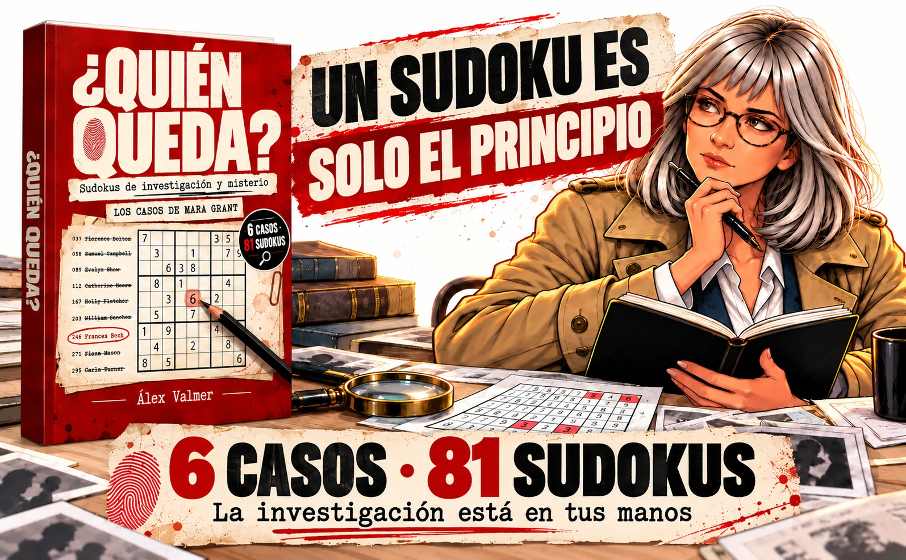

Los casos de Mara Grant · Volumen 1Un sudoku es
Un sudoku es
solo el principio.
Resuelve sudokus. Interpreta las pistas. Tacha sospechosos hasta descubrir quién queda.
Seis misterios para jóvenes y adultos que disfrutan investigando con lápiz y papel.
¿Quién queda? · Álex Valmer · Próximamente en Amazon
 6 CASOS
6 CASOS81 SUDOKUS
6Investigaciones independientes
81Sudokus clásicos de 9 × 9
300–750Sospechosos por caso
La investigación
empieza aquí.
01 /
Prueba un minicaso
Un sobre, treinta invitados y una felicitación desaparecida. Descubre la mecánica con esta prueba reducida en tu navegador.
Abrir el minicaso →02 /Abre el libro
Descubre qué encontrarás entre sus páginas y cómo se convierten las cifras en pistas.
Ver el expediente →03 /Aprende a investigar
Resuelve, extrae y descarta. Tres pasos para seguir el rastro hasta el final.
Así se juega →
Nuestra estantería empieza aquíLibros para jugar.
Libros para jugar.
Misterios para ti.
Descubre el primer expediente de Tinta Despierta. Una colección que empieza con Mara Grant y tu curiosidad.
Conoce ¿Quién queda? →